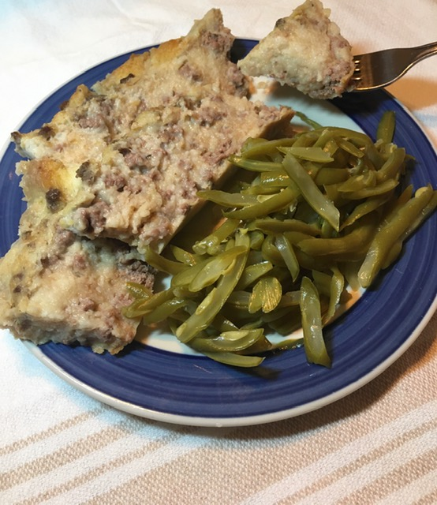

Mock Veal-turkey

A turkey dish on the run
Quick, easy, tasty, nutritious and low-calorie! Serve with rice and some vegetables. It takes about 25min
to make.
Ingredients
- 1lb turkey breast slices (pounded lightly flour)
- 1tsp oil
- 1tsp margarine
- 1/2 cup sliced mushrooms
- 1 green onion, sliced
- 1/2tsp thyme
- 1/2 fresh lemon
- lemon slices
Steps
- Dredge turkey slices in flour
- Heat oil and margarine in skillet
- Brown turkey
- Add mushrooms, onion and thyme as turkey browns
- Squeeze lemon juice over turkey slices and remove from skillet
- Stir mixture remaining in skillet until blended and slightly thickened
- Spoon over turkey slices
- Garnish with lemon